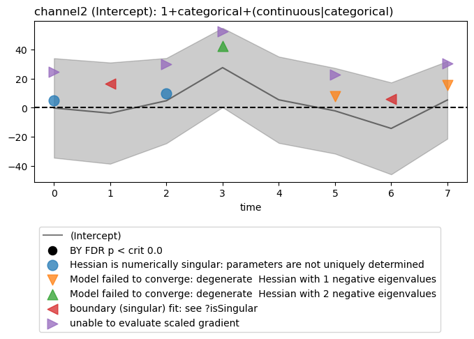

Note
Click here to download the full example code
Model summary visualization
These examples illustrate LMER and OLS model summary visualizations. For LMER models, this includes the model fitting warnings that are often encountered and other interesting information like the estimated degrees of freedom.
The fitgrid utilities for summary plotting all return matplot.Figure and matplotlib.Axes objects or a list of them so they can be fine tuned.
The examples use a small simulated data set to speed up processing and silly models to generate interesting warnings.
Warning
In practice, a model summary data frame may have large numbers of channels, models, and betas and the default plotting behavior is to plot the entire dataframe. To avoid overgenerating plots, select what you want to plot with the optional keyword arguments and/or prune the summary dataframe before plotting.
from matplotlib import pyplot as plt
import fitgrid
Generate a small random data set
epochs_fg = fitgrid.generate(n_samples=8, n_channels=4, seed=32)
channels = [
column for column in epochs_fg.table.columns if "channel" in column
]
Summarize a stack of two LMER models
lmer_rhs = [
"1 + categorical + (continuous | categorical)",
"1 + continuous + (1 | categorical)",
]
lmer_summaries = fitgrid.utils.summary.summarize(
epochs_fg,
"lmer",
LHS=channels,
RHS=lmer_rhs,
parallel=True,
n_cores=2,
quiet=True,
)
lmer_summaries
Out:
/home/runner/work/fitgrid/fitgrid/fitgrid/utils/summary.py:145: FutureWarning: fitgrid summaries are in early days, subject to change
warnings.warn(
Estimated coefficient (“beta”) plots
Select and plot one model intercept at a channels. Model warnings, if any, are plotted by default.
figs = fitgrid.utils.summary.plot_betas(
lmer_summaries,
LHS=["channel2"],
models=["1+categorical+(continuous|categorical)"],
betas=["(Intercept)"],
beta_plot_kwargs={"ylim": (-75, 75)},
)
Out:
Hessian is numerically singular: parameters are not uniquely determined
Model failed to converge: degenerate Hessian with 1 negative eigenvalues
Model failed to converge: degenerate Hessian with 2 negative eigenvalues
boundary (singular) fit: see ?isSingular
unable to evaluate scaled gradient
Display degrees of freedom
# Degrees of freedom for mixed-effects models are somewhat
# controversial. You can plot those returned by lmerTest. The degrees
# of freedom must be scaled by a function of your choosing. When when
# the df are much larger than the betas log transform like
# ``numpy.log10()`` may be useful. The identity function ``dof()``
# below shows schematically how to define your own and the example
# uses the Python anonymous function (``lambda``) to do the same thing as ``dof``.
def dof(x):
return x
figs = fitgrid.utils.summary.plot_betas(
lmer_summaries,
LHS=["channel2"],
models=["1+categorical+(continuous|categorical)"],
betas=["(Intercept)"],
beta_plot_kwargs={"ylim": (-100, 100)},
df_func=dof,
)

Out:
Hessian is numerically singular: parameters are not uniquely determined
Model failed to converge: degenerate Hessian with 1 negative eigenvalues
Model failed to converge: degenerate Hessian with 2 negative eigenvalues
boundary (singular) fit: see ?isSingular
unable to evaluate scaled gradient
Beta plots with FDR control
FDR controlled beta differences from zero can be plotted as well, though for LMER models, p values are somewhat controversial. For this toy data set with random data, none of the tests survive the FDR control procedure (see FDR control for model summaries for an example with EEG data).
figs = fitgrid.utils.summary.plot_betas(
lmer_summaries,
LHS=["channel2"],
models=["1+categorical+(continuous|categorical)"],
betas=["(Intercept)"],
beta_plot_kwargs={"ylim": (-100, 100)},
fdr_kw={"method": "BY"},
)
- 
Out:
/home/runner/work/fitgrid/fitgrid/fitgrid/utils/summary.py:919: UserWarning: FDR test family is for **ALL** models, betas, and channels in the summary dataframe not just those selected for plotting.
warnings.warn(fdr_msg)
{'betas': ['(Intercept)', 'categoricalcat1', 'continuous'],
'channels': ['channel0', 'channel1', 'channel2', 'channel3'],
'crit_p': 0.0,
'method': 'BY',
'models': ['1+categorical+(continuous|categorical)',
'1+continuous+(1|categorical)'],
'n_pvals': 128,
'rate': 0.05}
Hessian is numerically singular: parameters are not uniquely determined
Model failed to converge: degenerate Hessian with 1 negative eigenvalues
Model failed to converge: degenerate Hessian with 2 negative eigenvalues
boundary (singular) fit: see ?isSingular
unable to evaluate scaled gradient
AIC \(\Delta_\mathsf{min}\) with model warnings
For AIC \(\Delta_\mathsf{min}\) plots the default is to highlight all grid cells with warnings.
fig, axs = fitgrid.utils.summary.plot_AICmin_deltas(
lmer_summaries,
figsize=(12, 5),
)
fig.tight_layout()
Plot all warnings and display the warning types
plt.close("all")
fig, ax = fitgrid.utils.summary.plot_AICmin_deltas(
lmer_summaries, show_warnings="labels"
)
fig.tight_layout()
Select specific warning types to plot
plt.close("all")
fig, ax = fitgrid.utils.summary.plot_AICmin_deltas(
lmer_summaries, show_warnings=["converge"]
)
fig.tight_layout()
Out:
/home/runner/work/fitgrid/fitgrid/fitgrid/utils/summary.py:1152: UserWarning: show_warnings 'converge' not found in model 1+continuous+(1|categorical) warnings: [boundary (singular) fit: see ?isSingular]
warnings.warn(msg)
OLS model summaries and plots
Summaries of OLS models and models stacks are computed the same way as LMER models.
# Compute OLS fit summaries for two models
lm_rhs = ["1 + categorical", "1 + continuous"]
lm_summaries = fitgrid.utils.summary.summarize(
epochs_fg,
"lm",
LHS=channels,
RHS=lm_rhs,
parallel=False,
quiet=True,
)
lm_summaries
Out:
/home/runner/work/fitgrid/fitgrid/fitgrid/utils/summary.py:145: FutureWarning: fitgrid summaries are in early days, subject to change
warnings.warn(
Since summary data frames are indexed alike for LMER and OLS, the same beta and AIC \(\Delta_\mathsf{min}\) plotting are used and work the same way.
plt.close('all')
figs = fitgrid.utils.summary.plot_betas(
lm_summaries,
LHS=["channel0", "channel1"],
models=["1 + categorical"],
betas=["Intercept"],
beta_plot_kw={"ylim": (-25, 25)},
interval=[2, 6],
)
AIC \(\Delta_\mathsf{min}\)
Customizing figrid summary plots
Some matplotlib options can be passed through.
plt.close("all")
figs = fitgrid.utils.summary.plot_betas(
lm_summaries,
LHS=["channel0", "channel1"],
models=["1 + categorical"],
betas=["Intercept"],
beta_plot_kw={"ylabel": "$\mu$V / unit change", "ylim": (-25, 25)},
interval=[2, 6],
)
The matplotlib.Figure and matplotlib.Axes are returned so they can be customized.
plt.close("all")
fig, axs = fitgrid.utils.summary.plot_AICmin_deltas(
lm_summaries,
figsize=(12, 8),
gridspec_kw={"width_ratios": [1, 1, 0.1]}, # column widths
)
# matplotlib.Axes tuning ... the axs are a numpy.array, 2 rows of 3 columns
for ax_row in axs:
ax_row[0].set(ylim=(0, 12))
ax_row[0].set_yticks([2, 4, 7, 10])
for line in [hl for hl in ax_row[0].get_lines()]:
if "channel" not in line.get_label():
line.set(linewidth=0.75, color="black", zorder=0)
else:
line.set(linewidth=4)
# text annotation
axs[1][1].annotate(
text=(
"For these $\mathcal{N}(0, 1)$ random data,\n"
"$\Delta_{\mathsf{min}}$ > 4 like this is rare."
),
xy=(1, 0.6),
xytext=(1.75, 1.25),
arrowprops={"width": 2},
)
fig.tight_layout()

Total running time of the script: ( 0 minutes 18.951 seconds)